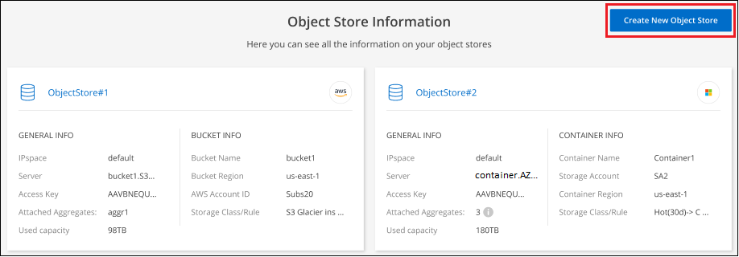
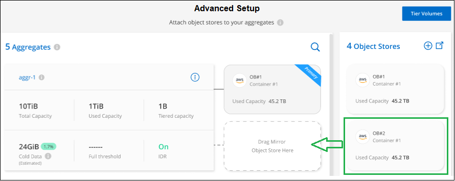

Los geht's
Los geht's
Managen von Objekt-Storage für Daten-Tiering
 Änderungen vorschlagen
Änderungen vorschlagen
Nachdem Ihre On-Premises-ONTAP-Cluster für das Tiering von Daten auf einen bestimmten Objekt-Storage konfiguriert wurden, können Sie zusätzliche Objekt-Storage-Aufgaben durchführen. Sie können neuen Objekt-Storage hinzufügen, Tiering-Daten auf einen sekundären Objekt-Storage spiegeln, den primären und gespiegelten Objekt-Storage aus einem Aggregat entfernen und vieles mehr.
Anzeigen von für ein Cluster konfigurierten Objektspeichern
Vielleicht möchten Sie alle Objektspeicher sehen, die für Ihren Cluster konfiguriert wurden und an die Aggregate angeschlossen sind. BlueXP Tiering bietet diese Informationen für jedes Cluster.
-
Klicken Sie auf der Seite Cluster auf das Menüsymbol für einen Cluster und wählen Sie Object Store Info.
-
Prüfen Sie Details zu den Objektspeichern.
Dieses Beispiel zeigt einen Amazon S3- und Azure Blob-Objektspeicher, der mit verschiedenen Aggregaten auf einem Cluster verbunden ist.

Hinzufügen eines neuen Objektspeichers
Sie können einen neuen Objektspeicher hinzufügen, der für Aggregate in Ihrem Cluster verfügbar ist. Nachdem Sie es erstellt haben, können Sie es an ein Aggregat anhängen.
-
Klicken Sie auf der Seite Cluster auf das Menüsymbol für einen Cluster und wählen Sie Object Store Info.
-
Klicken Sie auf der Seite Object Store Information auf Neuen Objektspeicher erstellen.

Der Objektspeicherassistent wird gestartet. Das folgende Beispiel zeigt, wie ein Objektspeicher in Amazon S3 erstellt wird.
-
Objekt-Speichername definieren: Geben Sie einen Namen für diesen Objekt-Speicher ein. Er muss von jedem anderen Objekt-Storage, den Sie mit Aggregaten auf diesem Cluster verwenden können, eindeutig sein.
-
Anbieter auswählen: Wählen Sie den Anbieter, zum Beispiel Amazon Web Services, und klicken Sie auf Weiter.
-
Führen Sie die Schritte auf den Seiten Objektspeicherung erstellen aus:
-
S3 Bucket: Fügen Sie einen neuen S3-Bucket hinzu oder wählen Sie einen vorhandenen S3-Bucket aus, der mit dem Präfix Fabric-Pool beginnt. Geben Sie anschließend die AWS Konto-ID ein, mit der auf den Bucket zugegriffen werden kann, wählen Sie die Bucket-Region aus und klicken Sie auf Weiter.
Das Präfix Fabric-Pool ist erforderlich, da die IAM-Richtlinie für den Connector ermöglicht, S3-Aktionen auf Buckets auszuführen, die mit diesem exakten Präfix benannt sind. Sie könnten beispielsweise den S3-Bucket Fabric-Pool-AFF1 benennen, wobei AFF1 der Name des Clusters ist.
-
Lebenszyklus der Storage-Klasse: BlueXP Tiering managt die Lifecycle-Übergänge Ihrer Tiering-Daten. Die Daten beginnen in der Klasse Standard, aber Sie können eine Regel erstellen, um nach einer bestimmten Anzahl von Tagen eine andere Speicherklasse auf die Daten anzuwenden.
Wählen Sie die S3-Speicherklasse aus, in die die Tiered-Daten verschoben werden sollen, und die Anzahl der Tage, bevor die Daten dieser Klasse zugewiesen werden, und klicken Sie auf Weiter. Der folgende Screenshot zeigt zum Beispiel, dass nach 45 Tagen im Objektspeicher die Klasse Standard-IA der Klasse Standard zugeordnet ist.
Wenn Sie Daten in dieser Speicherklasse speichern, verbleiben die Daten in der Speicherklasse Standard und es werden keine Regeln angewendet. "Siehe Unterstützte Speicherklassen".

Beachten Sie, dass die Lebenszyklusregel auf alle Objekte im ausgewählten Bucket angewendet wird.
-
Anmeldeinformationen: Geben Sie die Zugriffsschlüssel-ID und den geheimen Schlüssel für einen IAM-Benutzer ein, der über die erforderlichen S3-Berechtigungen verfügt, und klicken Sie auf Weiter.
Der IAM-Benutzer muss sich im gleichen AWS-Konto wie der Bucket befinden, den Sie auf der Seite S3 Bucket ausgewählt oder erstellt haben. Siehe die erforderlichen Berechtigungen im Abschnitt über die Aktivierung von Tiering.
-
Clusternetzwerk: Wählen Sie den IPspace aus, den ONTAP verwenden soll, um eine Verbindung zum Objekt-Storage herzustellen, und klicken Sie auf Weiter.
Durch Auswahl des passenden IPspaces wird sichergestellt, dass BlueXP Tiering eine Verbindung von ONTAP zu dem Objekt-Storage Ihres Cloud-Providers herstellen kann.
-
Der Objektspeicher wird erstellt.
Jetzt können Sie den Objektspeicher einem Aggregat in Ihrem Cluster hinzufügen.
Hinzufügen eines zweiten Objektspeichers zu einem Aggregat zur Spiegelung
Sie können einen zweiten Objektspeicher an ein Aggregat anbinden, um einen FabricPool-Spiegel zu Synchron-Tiering-Daten an zwei Objektspeichern zu erstellen. An das Aggregat muss bereits ein Objektspeicher angeschlossen sein. "Weitere Informationen zu FabricPool Mirrors".
Beim Einsatz einer MetroCluster Konfiguration empfiehlt es sich, Objektspeicher in der Public Cloud in verschiedenen Verfügbarkeitszonen zu verwenden. "Weitere Informationen zu den MetroCluster-Anforderungen finden Sie in der ONTAP-Dokumentation".
Beachten Sie, dass bei Verwendung von StorageGRID als Objektspeicher in einer MetroCluster Konfiguration beide ONTAP Systeme FabricPool Tiering auf einem einzelnen StorageGRID System durchführen können. Für jedes ONTAP System müssen Daten in verschiedene Buckets verschoben werden.
-
Klicken Sie auf der Seite Cluster auf Erweitertes Setup für den ausgewählten Cluster.

-
Ziehen Sie auf der Seite Erweiterte Einrichtung den Objektspeicher, den Sie verwenden möchten, an den Speicherort für den Spiegelobjektspeicher.

-
Klicken Sie im Dialogfeld „Objektspeicher anhängen“ auf Anhängen und der zweite Objektspeicher ist an das Aggregat angehängt.

Der Mirror-Status wird als „Sync in Progress“ angezeigt, während die 2 Objektspeichern synchronisiert werden. Der Status ändert sich in „synchronisiert“, wenn die Synchronisierung abgeschlossen ist.
Austausch des primären und gespiegelten Objektspeichers
Sie können den primären Objektspeicher und den gespiegelten Objektspeicher für ein Aggregat umtauschen. Die Objektspeicherspiegelung wird zum primären Volume und das ursprüngliche primäre Volume zum Spiegel.
-
Klicken Sie auf der Seite Cluster auf Erweitertes Setup für den ausgewählten Cluster.
-
Klicken Sie auf der Seite Erweiterte Einstellungen auf das Menüsymbol für das Aggregat und wählen Sie Ziele tauschen aus.

-
Genehmigen Sie die Aktion im Dialogfeld, und die Speicher der primären und Spiegelobjekte werden ausgetauscht.
Entfernen eines gespiegelten Objektspeichers aus einem Aggregat
Sie können eine FabricPool-Spiegelung entfernen, wenn Sie nicht mehr auf einen zusätzlichen Objektspeicher replizieren müssen.
-
Klicken Sie auf der Seite Cluster auf Erweitertes Setup für den ausgewählten Cluster.
-
Klicken Sie auf der Seite Erweiterte Einstellungen auf das Menüsymbol für das Aggregat und wählen Sie Unmirror Object Store aus.

Der Mirror-Objektspeicher wird aus dem Aggregat entfernt und die Tiered-Daten werden nicht mehr repliziert.

|
Wenn Sie den Mirror-Objektspeicher aus einer MetroCluster-Konfiguration entfernen, werden Sie gefragt, ob Sie auch den primären Objektspeicher entfernen möchten. Sie können festlegen, dass der primäre Objektspeicher an das Aggregat angeschlossen ist, oder dass Sie ihn entfernen möchten. |
Migration Ihrer Tiered Daten zu einem anderen Cloud-Provider
Mit BlueXP Tiering können Sie Ihre Tiering-Daten einfach zu einem anderen Cloud-Provider migrieren. Wenn Sie beispielsweise von Amazon S3 zu Azure Blob verschieben möchten, führen Sie die oben aufgeführten Schritte in der folgenden Reihenfolge aus:
-
Fügen Sie einen Azure Blob-Objektspeicher hinzu.
-
Hängen Sie diesen neuen Objektspeicher als Spiegelung an das vorhandene Aggregat an.
-
Tauschen Sie die primären und gespiegelten Objektspeicher aus.
-
Heben Sie die Spiegelung des Amazon S3-Objektspeichers auf.